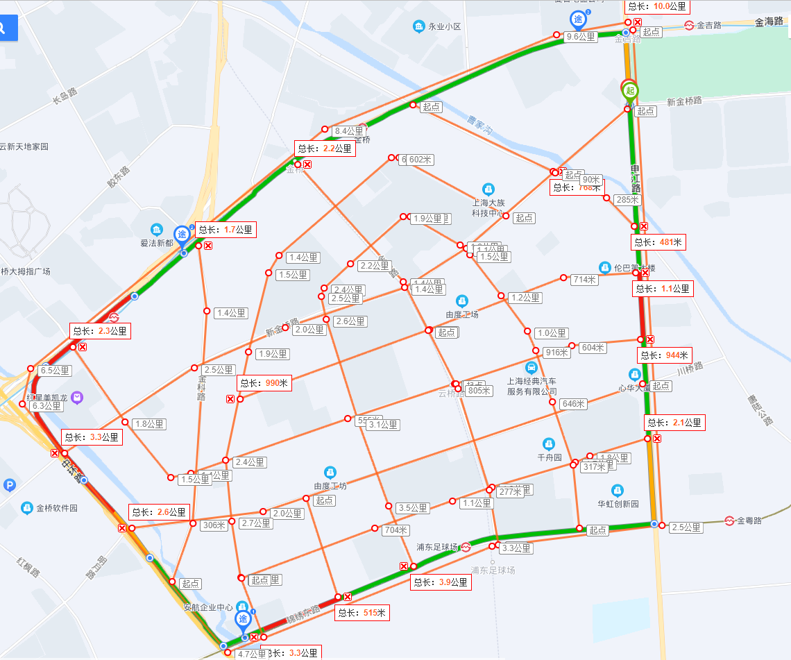

Shanghai HD Map route （added for SOP）
Shanghai (for SOP newly added): 58.6 + 72.4 + 13.5 = 144.5 km
|
|
Mileage (KM) |
Remark |
|
Pudong Jinqiao Intelligent Connected Automobile Open Road Test Area |
58.6 |
Jinsui Road-Jufeng Road-Shenjiang Road-Dongjing Road-Lingkong North Road-Shengli Road-Chuansha Road-Jinxiu East Road-Guotang Road-Minyao Road-Shangchuan Road |
|
Urban area |
72.4 |
Shenjiang Road-Jinxiu East Road-Jinqiao Road-Yang Gao Middle Road-Jinhai Road and the surrounding area |
|
Medium and bad elevation |
13.5 |
Jinxiu East Road-Golden Bridge Road-Central Elevated-Military Road Tunnel-Military Workers Road (Towards) -Medium and Bad Elevation-Jinqiao Road-Yang Gao Middle Road |
Golden Bridge Demonstration Area:
As shown below: 29.3 x 2 = 58.6 km


Urban Area (don't take elevated)
Shenjiang Road-Jinxiu East Road-Jinqiao Road-Yang Gao Middle Road-Jinhai Road and the surrounding areas, as shown in the figure below: 36.2km * 2 = 72.4km
screenshot:

Central elevated
Jinxiu East Road-Golden Bridge-Central Elevated-Military Workers Road Tunnel-Military Workers Road (Turning) -Medium and Bad Elevation-Jinqiao Road-Yang Gao Middle Road: 13.5km: 13.5km
screenshot: